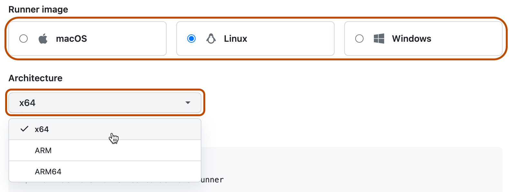

You can add a self-hosted runner to a repository, an organization, or an enterprise.
Warning
We recommend that you only use self-hosted runners with private repositories. This is because forks of your public repository can potentially run dangerous code on your self-hosted runner machine by creating a pull request that executes the code in a workflow.
Before you add a self-hosted runner, you should understand what they are and how they work. See Self-hosted runners.
Additionally, you must meet the following requirements:
You must have access to the machine you will use as a self-hosted runner in your environment.
Adding a self-hosted runner to a repository
You can add self-hosted runners to a single repository. To add a self-hosted runner to a user repository, you must be the repository owner. For an organization repository, you must be an organization owner or have admin access to the repository.
On GitHub, navigate to the main page of the repository.
Under your repository name, click Settings. If you cannot see the "Settings" tab, select the dropdown menu, then click Settings.
In the left sidebar, click Actions, then click Runners.
Click New self-hosted runner.
Select the operating system image and architecture of your self-hosted runner machine.

You will see instructions showing you how to download the runner application and install it on your self-hosted runner machine.
Open a shell on your self-hosted runner machine and run each shell command in the order shown.
Note
On Windows, if you want to install the self-hosted runner application as a service, you must open a shell with administrator privileges. We also recommend that you use C:\actions-runner as the directory for the self-hosted runner application so that Windows system accounts can access the runner directory.
The instructions walk you through completing these tasks:
Downloading and extracting the self-hosted runner application.
Running the config script to configure the self-hosted runner application and register it with GitHub Actions. The config script requires the destination URL and an automatically-generated time-limited token to authenticate the request. The token expires after one hour.
On Windows, the config script also asks if you would like to install the self-hosted runner application as a service. For Linux and macOS, you can install a service after you finish adding the runner. For more information, see Configuring the self-hosted runner application as a service.
Running the self-hosted runner application to connect the machine to GitHub Actions.
Checking that your self-hosted runner was successfully added
After completing the steps to add a self-hosted runner, the runner and its status are now listed under "Runners".
The self-hosted runner application must be active for the runner to accept jobs. When the runner application is connected to GitHub and ready to receive jobs, you will see the following message on the machine's terminal.
√ Connected to GitHub
2019-10-24 05:45:56Z: Listening for Jobs
You can add self-hosted runners at the organization level, where they can be used to process jobs for multiple repositories in an organization. To add a self-hosted runner to an organization, you must be an organization owner. For information about how to add a self-hosted runner with the REST API, see REST API endpoints for self-hosted runners.
On GitHub, navigate to the main page of the organization.
Under your organization name, click Settings. If you cannot see the "Settings" tab, select the dropdown menu, then click Settings.
In the left sidebar, click Actions, then click Runners.
Click New runner, then click New self-hosted runner.
Select the operating system image and architecture of your self-hosted runner machine.
You will see instructions showing you how to download the runner application and install it on your self-hosted runner machine.
Open a shell on your self-hosted runner machine and run each shell command in the order shown.
Note
On Windows, if you want to install the self-hosted runner application as a service, you must open a shell with administrator privileges. We also recommend that you use C:\actions-runner as the directory for the self-hosted runner application so that Windows system accounts can access the runner directory.
The instructions walk you through completing these tasks:
Downloading and extracting the self-hosted runner application.
Running the config script to configure the self-hosted runner application and register it with GitHub Actions. The config script requires the destination URL and an automatically-generated time-limited token to authenticate the request. The token expires after one hour.
On Windows, the config script also asks if you would like to install the self-hosted runner application as a service. For Linux and macOS, you can install a service after you finish adding the runner. For more information, see Configuring the self-hosted runner application as a service.
Running the self-hosted runner application to connect the machine to GitHub Actions.
Checking that your self-hosted runner was successfully added
After completing the steps to add a self-hosted runner, the runner and its status are now listed under "Runners".
The self-hosted runner application must be active for the runner to accept jobs. When the runner application is connected to GitHub and ready to receive jobs, you will see the following message on the machine's terminal.
√ Connected to GitHub
2019-10-24 05:45:56Z: Listening for Jobs
For security reasons, public repositories can't use runners in a runner group by default, but you can override this in the runner group's settings. For more information, see Managing access to self-hosted runners using groups.
Adding a self-hosted runner to an enterprise
If you use GitHub Enterprise Cloud, you can add self-hosted runners to an enterprise, where they can be assigned to multiple organizations. The organization owner can control which repositories can use it. For more information, see the GitHub Enterprise Cloud documentation.
Next steps
You can set up automation to scale the number of self-hosted runners. For more information, see Self-hosted runners reference.